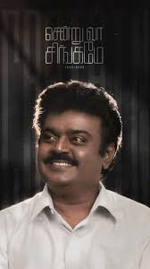

 Vijayaraj Alagarswami, known by his stage name Vijayakanth, was an Indian actor, filmmaker, philanthropist and
politician. He worked in Tamil cinema in a career spanning four decades. He ventured into politics in the later
part of his career and founded his own party Desiya Murpokku Dravida Kazhagam. Wikipedia
Born: 25 August 1952, Madurai
Died: 28 December 2023 (age 71 years), Chennai
Party: Desiya Murpokku Dravida Kazhagam
Spouse: Premalatha Vijayakanth (m. 1990)
Children: Shanmuga Pandian, V. Vijaya Prabhakaran
Education: De Britto Hr Sec School.
Vijayaraj Alagarswami, known by his stage name Vijayakanth, was an Indian actor, filmmaker, philanthropist and
politician. He worked in Tamil cinema in a career spanning four decades. He ventured into politics in the later
part of his career and founded his own party Desiya Murpokku Dravida Kazhagam. Wikipedia
Born: 25 August 1952, Madurai
Died: 28 December 2023 (age 71 years), Chennai
Party: Desiya Murpokku Dravida Kazhagam
Spouse: Premalatha Vijayakanth (m. 1990)
Children: Shanmuga Pandian, V. Vijaya Prab